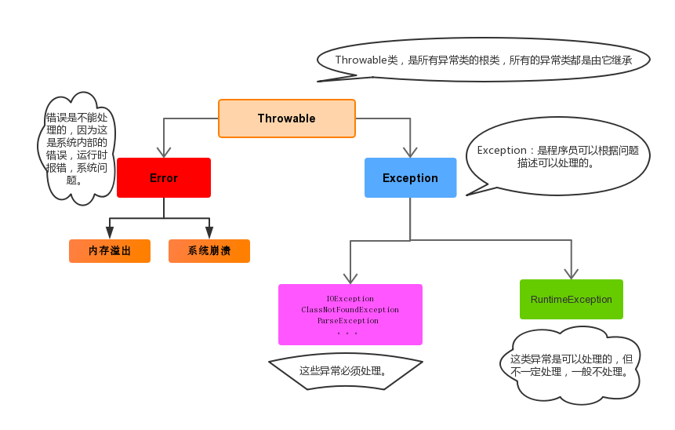

异常
1.如何理解异常？
程序在编译或者执行过程中出现某些非正常的原因导致程序不能继续执行并最终停止的情况课称之为异常。比如说访问空指针， 访问的文件不存在， 使用了不合法参数等都是异常。
异常是一个事件， 发生在程序的运行期间。JAVA中的异常使用Throwable类及其子类来描述各种异常，故异常都是对象！
我们需要研究异常并避免异常，并提前处理异常是为了保证程序的安全和健壮性。

2.异常的分类
异常包括两大类，一类是error，一类是Exception。
2.1 error异常
error是程序中无法处理的错误，表示程序运行中较为严重的问题。此类错误一般表示为程序运行时JVM出现了问题，程序员无能为力，比如Virtual MachineError（虚拟机运行错误）、NoClassDefFoundError（类定义错误）、当JVM耗完可用内存时，将出现OutOfMemoryError错误。这一类错误发生的时候， java的虚拟机将终止线程。
2.2 Exception异常
Exception 异常也包括两个类：
- 编译时异常：继承自Exception 的异常或者其子类，在编译阶段就会报错，必须由程序员处理。
- 运行时异常：继承自RuntimeException 的异常或其子类，只在运行阶段出现。
3.运行时异常
常见的运行时异常如下：
ArrayIndexOutOfBoundsException 数组索引越界异常。（代码停止）
NullPointerException 空指针异常。直接输出空指针没有问题，但是调用空指针的变量的功能就会报错。
ClassCastException 类型转换异常。
NoSuchElementException 迭代器没有此元素异常
ArithmeticException 数字操作异常，如除法中除数为0。
NumerFormatException 数字转换异常。
4.编译时异常
继承自Exception 的异常或者其子类，在编译阶段就会报错，必须由程序员处理，目的在于提醒程序员该处可能出错，请检查。常抛出该异常来处理， 但不保证运行时不出错。
5.异常的产生处理默认过程
即默认自动处理异常的过程。
- 在出现的异常的代码出自动创建异常对象
- 之后将改异常对象抛给方法的调用者，之后送回main方法，最后送回JVM，
- JVM虚拟机收到异常对象之后，在控制台打印异常栈的信息，并直接在异常出现的位置终止程序。
- 后续代码不再执行。
默认的异常处理过程机制并不好，某些情况下我们并不希望程序在出现异常时直接终止。
6.定制编译时异常处理机制
编译异常若不处理则程序无法执行。
6.1直接抛出异常
在出现编译时异常的地方层层把异常抛给调用者，谁都不处理，调用者最终抛出给JVM虚拟机，虚拟机再 输出异常信息并最终干掉程序，与默认机制大致一样。
单个抛出某一类异常的方法效率不高，代码后续可能出现其它异常类，直接抛出Excepption代表所有异常。
1 | throws Excepption{ |
6.2在出现异常的地方自己处理
在底层那谁出现异常谁就处理：捕获处理。
1 | try{ |
缺点：可能出现多少异常，就要写多少个catch块，比较麻烦，换种写法：
1 | //JDK1.7及更高 |
还是麻烦可这么写：
1 | //企业级一般写法 |
这种方法可以处理异常，并且出现异常后代码不会立即死亡，但依旧不是最好的。
缺点： 上层调用出现异常代码的调用者并不能直接知道底层的执行情况。
6.3集中处理（规范做法）
在出现异常的地方把异常一层一层抛出给最外层调用者，由最外层调用者集中捕获处理。此方法最外层的调用者可以知道底层执行的情况，同时程序也不会在出现异常后立即死亡，理论上最优。
7.运行时异常的处理机制
只在运行阶段出现，在编译时不处理也不会报错，但运行时一但出现程序也会立即停止。
运行时异常的处理规范是在最外层捕获处理即可，底层会自动抛出。直接在最外层try ...catch...就行。
8.finally关键字
在捕获异常的时候，try只能出现1次，catch可以出现0-N次（如果有finally则可不需要），finally 0-1次
finally作用：在代码执行完毕之后进行资源的释放回收操作， 无论代码是出现异常还是正常执行，最终都一定会执行的代码。finally中的代码比try代码块中的return语句优先级更高，会先执行。不建议在finally中进行return操作，会取代try中的return语句返回。
什么是资源？资源就是实现了Closeable接口的类，自带close()方法。
9.异常的注意事项
- 运行时异常被抛出可以不处理。即不捕获也不声明抛出。
- 如果父类抛出了多个异常,子类覆盖父类方法时,只能抛出相同的异常或者是他的子集。
- 方法默认都可以自动抛出运行时异常！throws RuntimeException可以省略不写。
- 父类方法没有抛出异常，子类覆盖父类该方法时也不可抛出异常。此时子类产生该异常，只能捕获处理，不能声明抛出
- 当多异常处理时，捕获处理，前边的类不能是后边类的父类
- 在try/catch后可以追加finally代码块，其中的代码一定会被执行，通常用于资源回收。
10.自定义异常
即根据自己业务的异常情况来定义异常类，用来满足自己的业务需求。
如：认为年龄小于0岁，大于150岁就是异常。
自定义编译时异常的步骤：
定义一个异常类基础Exception.
重写构造器
在出现异常的地方用throw new 自定义对象抛出！
编译时异常在编译阶段就报错，提醒更加强烈，一定需要处理！
自定义运行时异常：
定义一个异常类继承RuntimeException
重写构造器
在出现异常的地方用throw new 自定义对象抛出！
编译时不报错。
1 | //自定义异常类 |
1 | public static void main(String[] args) { |